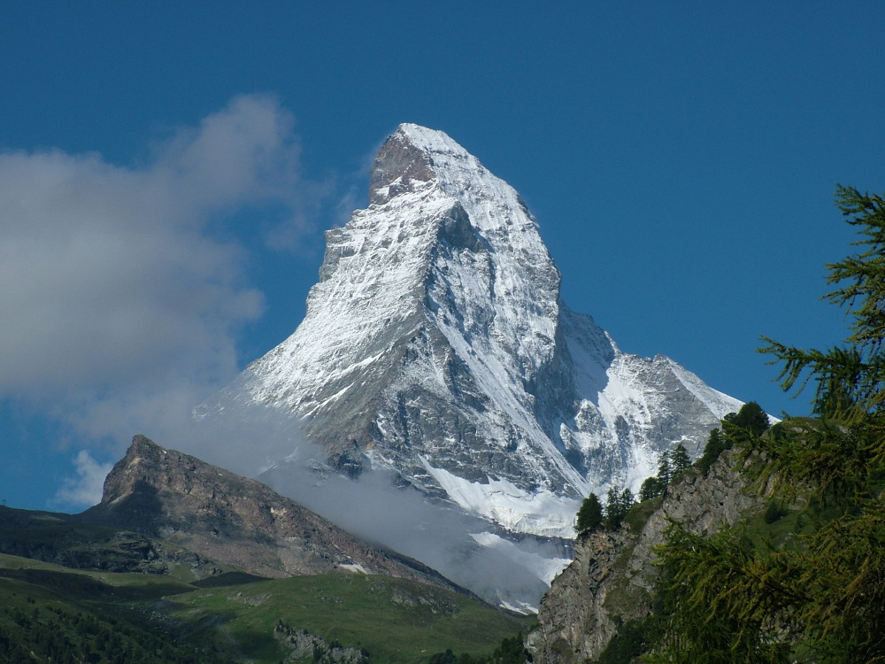

A belső tartály teteje
Az Alpok hat csúcsa, amelyhez nem kell szuper kondi
Nem mindenki érez magában elég erőt ahhoz, hogy meghódítson egy behavazott hegycsúcsot. Pedig a látvány, amely több ezer méter magasból tárul elénk, mindenki számára életre szóló élmény. Bemutatjuk az Alpok hat legmagasabb csúcsát, amelyekre hegymászó-felszerelés és -előképzettség, sőt különösebb erőfeszítés nélkül feljuthatunk.
Bár az Alpok legmagasabb pontjára, a 4810 méter magas Mont Blanc-ra csak a saját lábunkon juthatunk fel, több olyan 3000 méter feletti csúcs is van a nagy európai hegyláncon, amelyre felvonóval, vagy akár hegyi vasúttal is feljuthatunk.
Klein Matterhorn, Svájc
A Kis-Matternhorn az egész évben nyitva tartó zermatti, avagy matternhorni síparadicsom része. Az 1620 méter magasan fekvő autómentes Zermattból 1979 óta juthatunk el felvonóval a Klein Matternhorn 3883 méteres, mindig jeges csúcsára, ahonnan szép időben ráláthatunk a Mont Blanc-ra.A kilátáson kívül rendkívüli attrakció a Gleccserpalota, ahol a jégfelszín alatt15 méterrel gyönyörködhetünk a sejtelmesen megvilágított jégbarlangokban. Még ha nem is másztuk meg a hegyet, a dermesztő hideg és a ritka levegő azért így is emberpróbáló lehet.
Saas Fee, Svájc
Maradunk a Kis-Matterhorn környékén, Wallis tartományban. A szintén autómentes, csodaszép hegyi településtől, Saas Feetől percek alatt röpít fel az Alpin expressz 3000 méter magasságba csekély 65 svájci frankért, azaz több mint 18 000 forintért. Akinek ez sem elég, az tovább utazhat a világ legmagasabban közlekedő metrójával egészen 3500 méterig.A Metro Alpin 1984-ben lépett üzembe, azóta szállítja az utasokat az 1749 méter hosszú, meredeken emelkedő alagúton át Mittelallalin állomásáig.
L'Aiguille du Midi, Franciaország
A Klein Matterhorn után ez a második legmagasabb pont Európában (3842 méter), ahová hegymászó-felszerelés nélkül is el lehet jutni. A felvonót 1955-ben építették, két évtizeden át ez volt a világ legmagasabban fekvő ilyen létesítménye. Chamonixból indul, egy átszállással 20 perc alatt abszolválja a 2800 méteres szintkülönbséget. Az igazi csoda azonban csak ezután vár ránk: a felvonó végállomásától lift visz fel bennünket a levegőben lógó üvegkilátóba.
Jungfrau-gleccser, Svájc
Európában ennél magasabban nem zakatol vonat. A végállomás 3454 méter magasan van, az alagút közel 7 kilométer hosszú, 25 százalékos emelkedővel. Felfelé 50, lefelé csak 35 percig tart az út. Kleine Scheidegg a kiindulóállomás, innen a vonat az Eiger északi oldala mellett halad Eigerwandig, ahol egy nyolc méter széles ablakon nézhetünk ki a sziklaalagútból, de akár ki is szállhatunk, hogy a szabad levegőn gyönyörködjünk a panorámában. A következő megálló a Jungfrau, itt sziklába vájt ablakon át láthatjuk az Eismeert (Jégtengert), majd a vonat tovább emelkedik a csúcsig.
Passo dello Stelvio, Olaszország
A dél-tiroli Stilfser Joch, olaszul Passo dello Stelvio nemcsak Olaszország, de az Alpok, sőt egész Európa legmagasabban fekvő aszfaltozott, autóval járható hágója (2757 méter). A Valtellina és Val Ventoso közötti utat a bécsi békeszerződés után a Habsburgok építették ki, hogy összekössék Lombardiát Tirollal. Carlo Donegani tervei alapján 1825-ben készült el a 49 kilométer hosszú út Tirol és Bormio között, 75 kilométerre Bolzanótól és alig 200 méterre a svájci hágótól. A rengeteg hajtűkanyarból álló utat egyaránt imádják az autósok, a motorosok és a túrakerékpárosok.
Pitztal-gleccser, Ausztria
Ez a legmagasabb pont Ausztriában, ahová felvonóval eljuthatunk. A pitztali sípályarendszerhez kabinos gleccserexpresszel jutunk fel nagyjából nyolc perc alatt. Innen Ausztria legmagasabb libegőjével, a Wildspitzbahnnal mehetünk tovább a 3440 méter magas Hinterer Brrunnenkogel csúcsra. Ott pedig beülhetünk a Cafe 3440-be, és a hatalmas üvegfalon át bámulhatjuk a körös-körül emelkedő háromezres csúcsokat.
A belső tartály alja